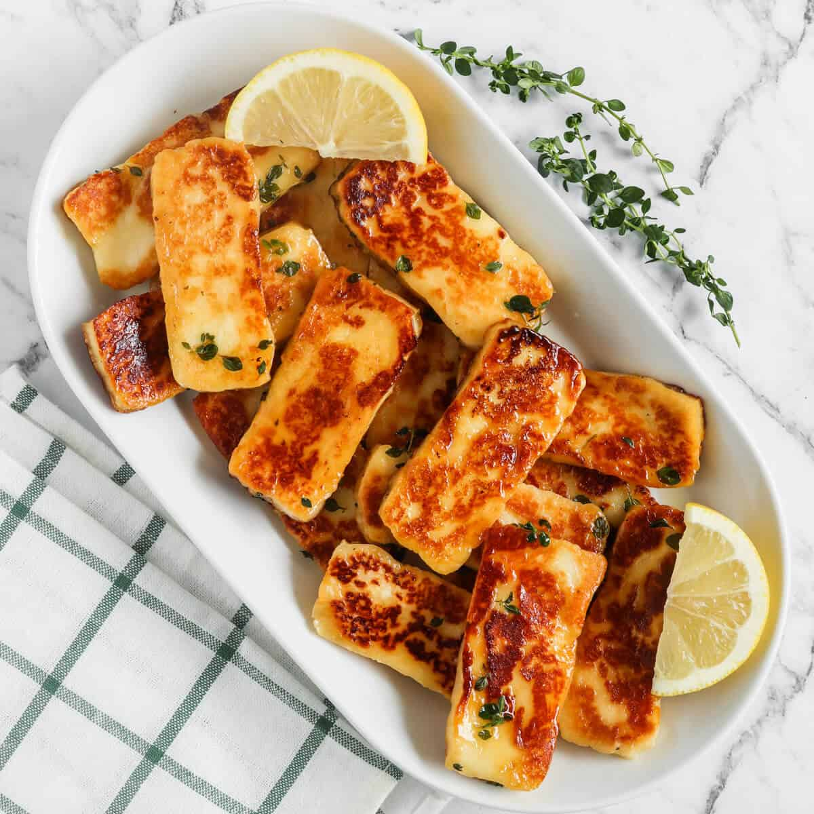

Fried Halloumi

Description
Slices of halloumi cheese are pan-fried in olive oil and finished with fresh lemon juice
and oregano for a tangy, salty, and savory saganaki cheese dish.
Serve this appetizer with crusty bread for mopping up all the delicious pan juices!
Ingredients
- 2 tablespoons olive olive
- 1 package halloumi cheese
- 1 large lemon, juiced
- 2 pinches dried oregano
Steps
- Heat olive oil over medium heat in a large skillet big enough to fit all halloumi slices.
- Once oil is hot but not smoking, add halloumi.
- Cook until well browned on the bottom, about 4 minutes.
- Flip and cook the other side until browned, about 3 minutes.
- Pour lemon juice over browned halloumi and let reduce slightly.
- Remove from heat and sprinkle with oregano. Serve hot.